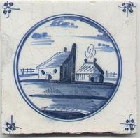

|  |
Nix BuildfarmThe Nix Buildfarm of the TU Delft Software Engineering Research Group continuously builds a wide range of software developed by the group and externally. The release indexes list the unstable and stable distributions constructed by the Nix Buildfarm. |